Before and after
Left: the app at localhost:7420 today. Right: the v3 prototype with the same runs and machines. Both at 1440 by 900. Click through the prototype itself at prototype/index.html; the reasons are in audit.md and direction.md.
Runs
Before: the blocked run is one row of five in a six-column table, with a filter, a keyboard hint and a second Machines button competing with it.
After: the run that waits on you is a card at the top that says what it asks; finished runs are a quiet list of names and outcomes.
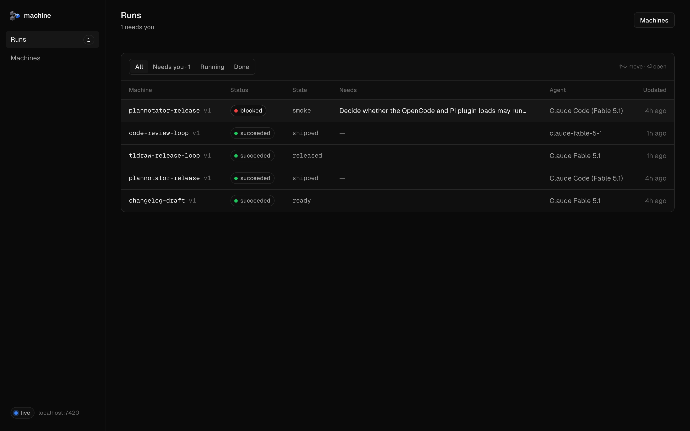
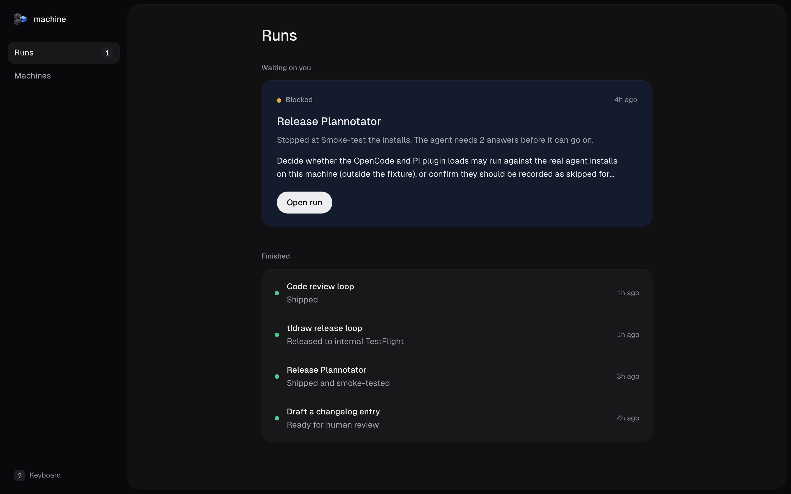
Run that is blocked
Before: six lines of the agent's note come before the asks, the button says "I fixed it" to questions, and a 15-step graph with 32 tiny labels fills the right third.
After: one column: where the run is, the two questions, a field for your answer and Resume, all in the first screen; history, map and inputs wait below.
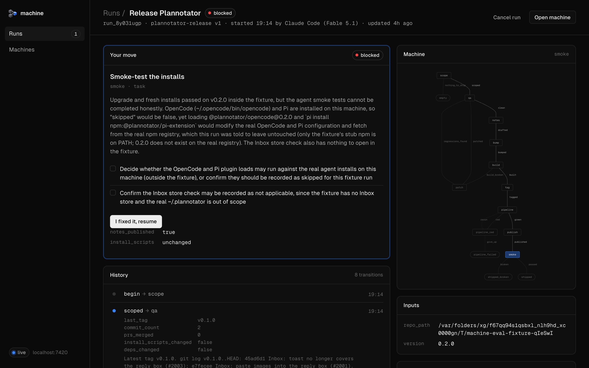
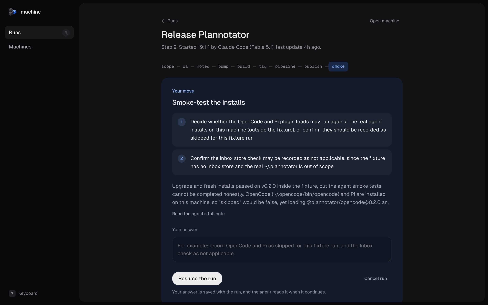
Run that finished
Before: the agent's summary is set in mono with words broken mid-word ("script s/install.sh"), next to the same always-open graph.
After: the outcome and the last report; long values read as text, short ones stay mono.
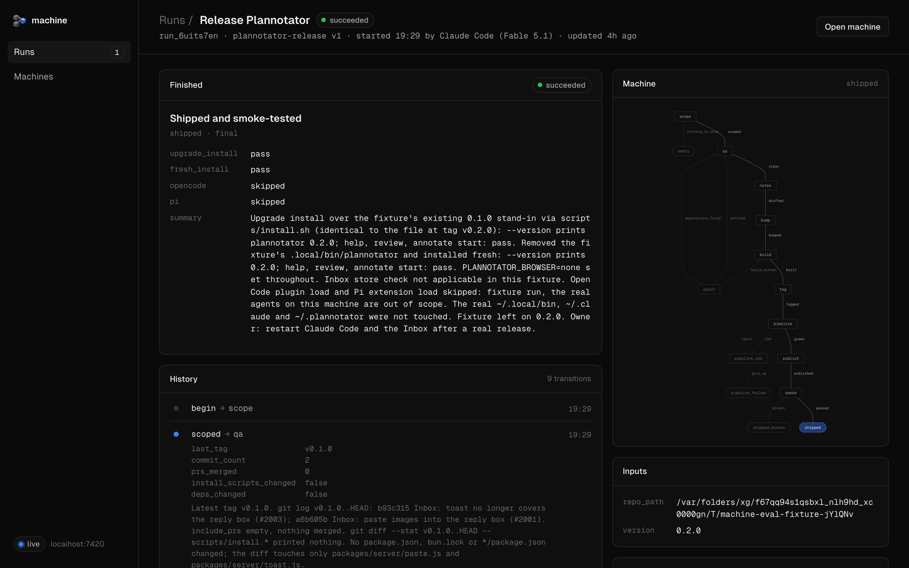
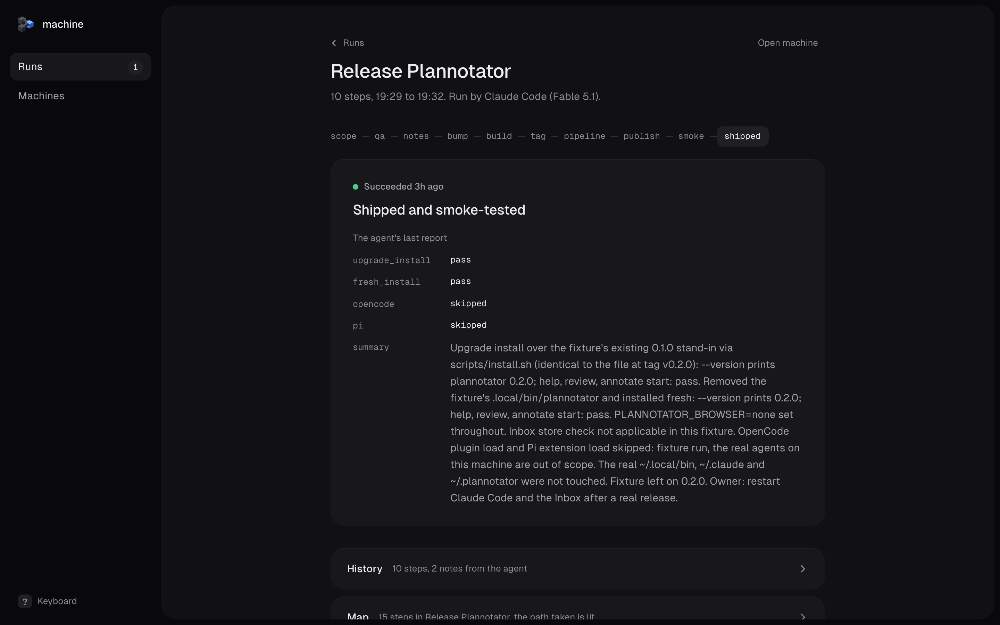
Machines
Before: a table where four-line descriptions set the row height, plus ids, versions and three number columns.
After: one line per machine with the name, one line of description, when it last ran, and a waiting count only when there is one.
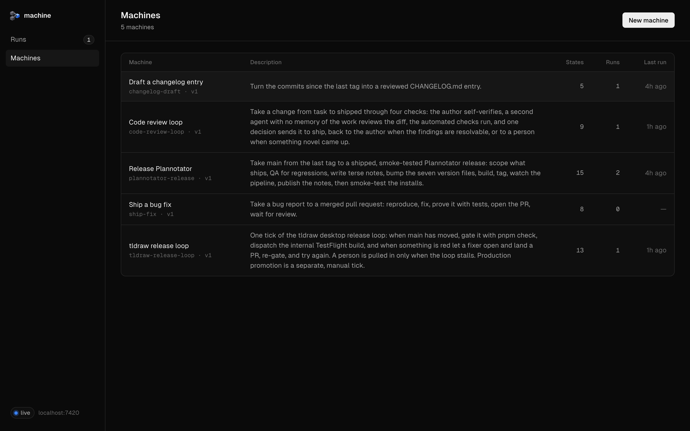
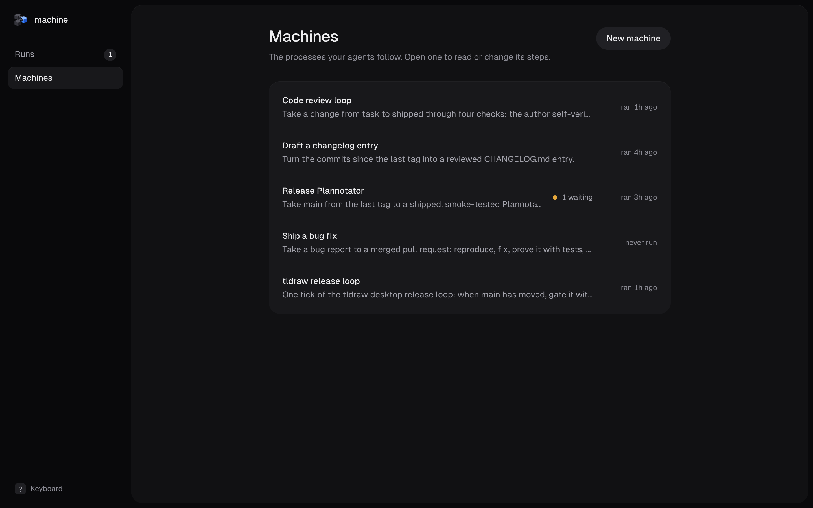
Machine editor
Before: you land in a form for id, name and description, everything in mono, beside a full-weight graph with every edge labelled.
After: the steps by title, nothing open; the map recedes and lights only the step you pick, and Publish appears when there is something to publish.
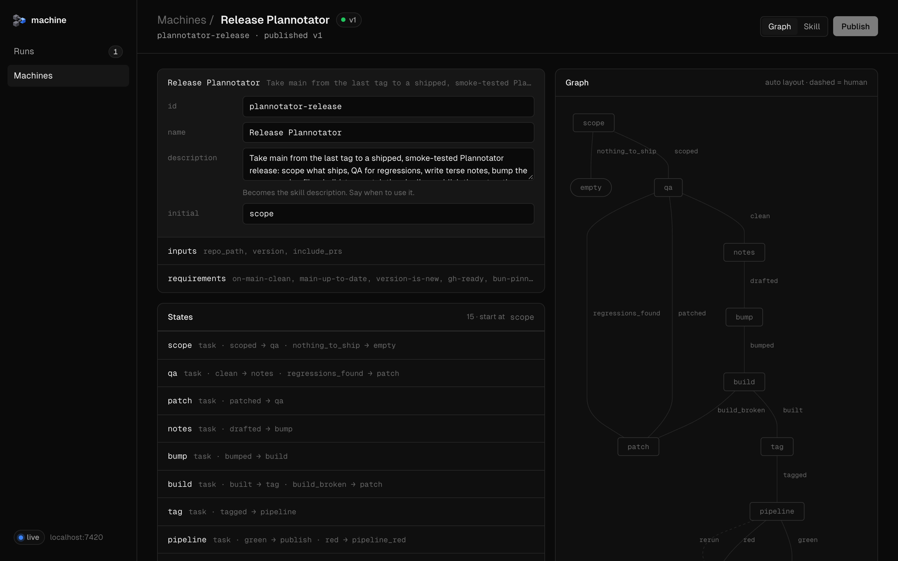
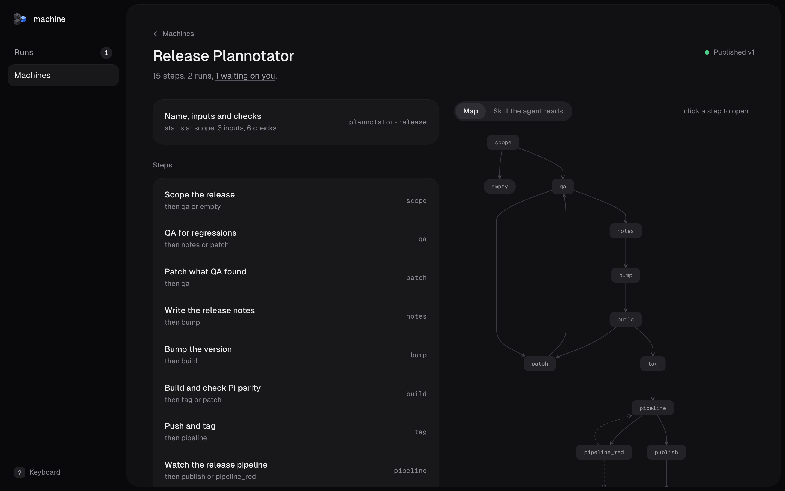
One step away
What the prototype keeps folded until you ask: the history grouped by step, the map with the path taken lit, the run after you answer, and a step opened in the editor.
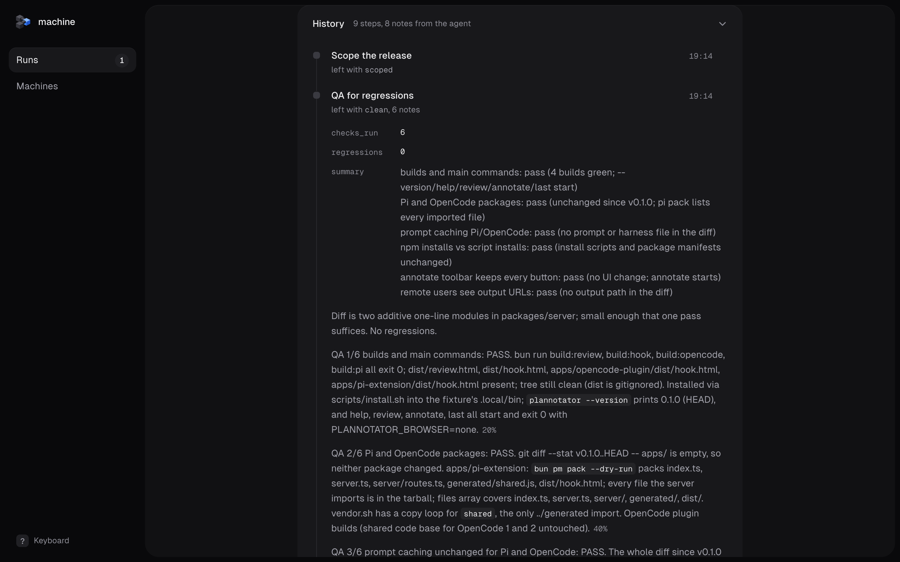
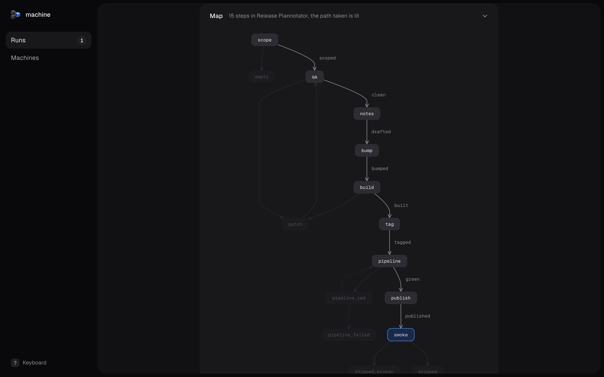
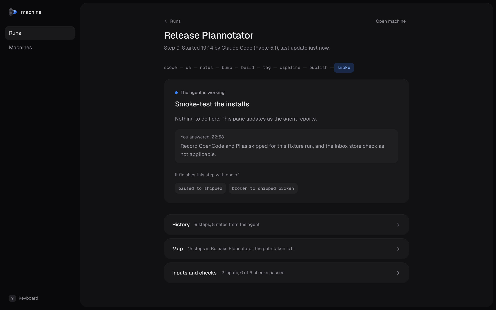
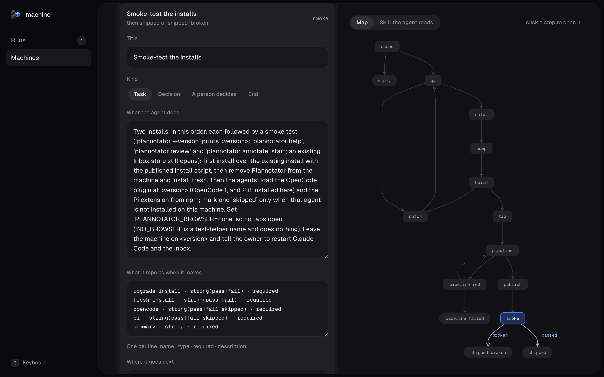